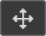
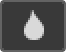
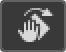

Merubah Warna Kulit Pisang
 Photoshop
Photoshop


Untuk awal belajar photoshop pemula sebaiknya mempelajari Menu Utama yang berada dibagian atas program Photoshop. Menu utama Photoshop diantaranya adalah File, Edit, Image, Layer, Select, Filter, View, Window dan Help.

File – New… (Ctrl+N) : Membuka lembar kerja baru

Tampilan Halaman Lembar Kerja Baru
| File | Digunakan untuk langkah-langkah awal dan langkah akhir dalam pengeditan foto, karena disana bisa memilih pilihan membuka lembar kerja baru, Impor foto, Browse, Open As, Close, Save, Save As, proses Print ke media cetak. |
| Edit | Digunakan untuk langkah-langkah pembantu pengeditan, karena disana ada pilihan Cut, Copy, Undo, Stroke, Paste, Free Transform, Fill, Clear dan masih banyak lagi yang lain. |
| Image | Mengolah foto sedemikian yang kita inginkan. Pilihan yang paling utama adalah Adjustment dimana bisa mengatur tingkat warna, kecerahan, exposure, kontras, maupun mengubah seluruh komposisi warna dengan beberapa pilihan seperti Equalize, Posterize dan lain-lain. Selain itu pengaturan rotasi dan ukuran foto juga terdapat pada menu Image, dengan pilihan Image Sizes dan Rotate Canvas. |
| Layer | Mengolah gambar baik itu dari warna, tingkat kecerahan, exposure, kontras dan lain-lain. Namun pengaturan pada Layer tersebut bukan untuk foto utama melainkan untuk lembar Layer. Banyak yang belajar photoshop pemula masih bingung akan fungsi dan cara menggunakan Layer. Pengertian Layer adalah sebuah object terpisah dari gambar utama (background) dan Layer-layer tersebut bisa proses tanpa menggangu object background maupun layer yang lainnya. |
| Select | digunakan untuk pengolahan select (memilih), baik itu dengan pilihan Select All, Deselect (membatalkan), Reselect (mengulangi), Inverse untuk mengganti bagian yang tidak terselect untuk terselect dengan metode yang hampir sama seperti Invert color, dan lain-lain. |
| Filter | mengolah foto untuk dirubah komposisi. Dengan fitur Extract dimana pilihan tersebut bisa digunakan untuk memisahkan warna yang berbeda. Selain itu pada menu Filter terdapat pilihan untuk memberi efek-efek pada foto menjadi Artistik, membuat foto samar-samar dengan efek Blur, memperhalus foto dengan fitur Reduce Noise, dan efek-efek lainnya. Menu Filter dapat juga digunakan untuk menaruh fitur plugin yang masih berhubungan. |
| View | digunakan untuk fitur tampilan, dengan yang utama adalah fitur Zoom in, Zoom out, Fit on Screen, mengatur Screen mode, Actual Pixel dan lain-lain. Menu ini dapat dipakai akses menggunakan tombol shortcut pada keyboard. |
| Windows | untuk mengatur apa saja kotak yang akan ditampilkan. Kami merekomendasikan kotak Layer, History dan Tools adalah yang terutama untuk ditampilkan. Atau akan lebih baik jika kotak Action juga ditampilkan apabila memilikinya. |
| Help | menu yang cukup penting untuk diakses yang berisi konten informasi tentang Photoshop serta fitur terbaru. |
| Move and Selection tools | ||
|---|---|---|
|  | Move Tool | Move Tool digunakan untuk memindahkan layer, seleksi, dan panduan dalam dokumen Photoshop. Aktifkan "Pilih Otomatis" untuk secara otomatis memilih lapisan atau grup yang Anda klik. |

|
Artboard Tool | Alat Artboard memungkinkan Anda mendesain beberapa web atau UX (pengalaman pengguna) dengan mudah untuk berbagai perangkat atau ukuran layar. |

|
Rectangular Marquee Tool | The Rectangular Marquee Tool menarik garis seleksi persegi panjang. Tekan dan tahan Shift saat Anda menyeret untuk menggambar pilihan persegi. |

|
Elliptical Marquee Tool | The Elliptical Marquee Tool menarik garis seleksi elips. Tekan dan tahan Shift untuk menggambar pilihan dalam lingkaran sempurna. |

|
Lasso Tool | Dengan Lasso Tool , Anda dapat menggambar garis seleksi bentuk bebas di sekitar objek. |

|
Polygonal Lasso Tool | Klik di sekitar objek dengan Polygonal Lasso Tool untuk mengelilinginya dengan garis seleksi poligonal bermata lurus. |

|
Magnetic Lasso Tool | The Lasso Tool Magnetic terkunci garis seleksi ke tepi objek saat Anda memindahkan kursor mouse Anda di sekitarnya. |

|
Object Selection Tool | The Object Selection Tool memungkinkan Anda memilih salah satu objek hanya dengan menyeret garis seleksi kasar di sekitar itu. |

|
Quick Selection Tool | The Quick Selection Tool memungkinkan Anda dengan mudah memilih salah satu objek hanya dengan lukisan di atasnya dengan kuas. Aktifkan "Tingkatkan Otomatis" di Bar Opsi untuk pilihan kualitas yang lebih baik. |

|
Magic Wand Tool | Magic Wand Tool Photoshop memilih area dengan warna yang sama dengan satu klik. Nilai "Toleransi" di Bar Opsi mengatur rentang warna yang akan dipilih. |
| Crop and Slice tools | ||

|
Crop Tool | Gunakan Crop Tool di Photoshop untuk memotong gambar dan menghapus area yang tidak diinginkan. Hapus centang "Hapus Piksel yang Dipotong" di Bar Opsi untuk memotong gambar secara tidak merusak. |

|
Perspective Crop Tool | Gunakan Perspective Crop Tool untuk memotong gambar dan memperbaiki distorsi umum atau masalah perspektif. |

|
Slice Tool | Slice Tool membagi gambar atau tata letak menjadi bagian yang lebih kecil (irisan) yang dapat diekspor dan dioptimalkan secara terpisah. |
| Slice Select Tool | Gunakan Slice Select Tool untuk memilih irisan individu yang dibuat dengan Slice Tool. | |

|
Frame Tool | Baru pada Photoshop CC 2019, Frame Tool memungkinkan Anda menempatkan gambar ke dalam bentuk persegi panjang atau elips. |
| Measurement tools | ||

|
Eyedropper Tool | Eyedropper Tool Photoshop mengambil sampel warna dalam sebuah gambar. Tingkatkan "Ukuran Sampel" di Opsi Bar untuk representasi warna area sampel yang lebih baik. |

|
3D Material Eyedropper Tool | Gunakan Alat Pipet Bahan 3D untuk mengambil sampel bahan dari model 3D di Photoshop. |

|
Color Sampler Tool | Color Sampler Tool menampilkan nilai warna untuk area yang dipilih (diambil sampelnya) dalam gambar. Hingga empat area dapat dijadikan sampel sekaligus. Lihat informasi warna di panel Info Photoshop. |

|
Ruler Tool | Alat Penggaris mengukur jarak, lokasi, dan sudut. Sangat bagus untuk memposisikan gambar dan elemen tepat di tempat yang Anda inginkan. |

|
Note Tool | Alat Catatan memungkinkan Anda untuk melampirkan catatan berbasis teks ke dokumen Photoshop Anda, baik untuk Anda sendiri atau orang lain yang mengerjakan proyek yang sama. Catatan disimpan sebagai bagian dari file .PSD. |
| Count Tool | Gunakan Alat Hitung untuk menghitung secara manual jumlah objek dalam gambar, atau agar Photoshop secara otomatis menghitung beberapa area yang dipilih dalam gambar. | |
| Retouching and Painting tools | ||

|
Spot Healing Brush Tool | The Spot Healing Brush di Photoshop cepat menghilangkan noda dan daerah masalah kecil lainnya dalam sebuah gambar. Gunakan ukuran kuas sedikit lebih besar dari noda untuk hasil terbaik. |

|
Healing Brush Tool | The Healing Brush memungkinkan Anda memperbaiki masalah daerah yang lebih besar dalam sebuah gambar dengan mengecat atas mereka. Tahan Alt (Win) / Option (Mac) dan klik untuk mengambil sampel tekstur yang baik, lalu cat di atas area yang bermasalah untuk memperbaikinya. |

|
Patch Tool | Dengan Patch Tool, gambarkan garis seleksi bentuk bebas di sekitar area masalah. Kemudian perbaiki dengan menyeret garis seleksi di atas area dengan tekstur yang baik. |

|
Content-Aware Move Tool | Gunakan Content-Aware Move Tool untuk memilih dan memindahkan bagian dari gambar ke area yang berbeda. Photoshop secara otomatis mengisi lubang di tempat asli menggunakan elemen dari area sekitarnya. |

|
Red Eye Tool | Alat Mata Merah menghilangkan masalah mata merah yang umum pada foto yang dihasilkan dari lampu kilat kamera. |

|
Brush Tool | The Brush Tool adalah alat lukisan utama Photoshop. Gunakan untuk melukis sapuan kuas pada layer atau pada layer mask. |

|
Pencil Tool | Pencil Tool adalah alat melukis Photoshop lainnya. Tapi sementara Brush Tool bisa melukis sapuan kuas tepi lembut, Pencil Tool selalu melukis dengan tepi keras. |

|
Color Replacement Tool | Gunakan Color Replacement Tool di Photoshop untuk mengganti warna objek dengan warna yang berbeda dengan mudah. |
| Mixer Brush Tool | Berbeda dengan Brush Tool standar, Mixer Brush di Photoshop dapat mensimulasikan elemen lukisan nyata seperti mencampur dan menggabungkan warna, dan kebasahan cat. | |

|
Clone Stamp Tool | Clone Stamp Tool adalah yang paling dasar dari alat retouching Photoshop. Ini sampel piksel dari satu area gambar dan melukisnya di atas piksel di area lain. |

|
Pattern Stamp Tool | Gunakan Pattern Stamp Tool untuk melukis pola di atas gambar. |

|
History Brush Tool | History Brush Tool melukis snapshot dari langkah sebelumnya (status sejarah) ke versi gambar saat ini. Pilih status sebelumnya dari panel History. |
| Art History Brush Tool | Art History Brush juga melukis snapshot dari status sejarah sebelumnya ke dalam gambar, tetapi melakukannya menggunakan sapuan kuas bergaya. | |

|
Eraser Tool | Eraser Tool di Photoshop secara permanen menghapus piksel pada layer. Itu juga dapat digunakan untuk melukis dalam keadaan sejarah sebelumnya. |

|
Background Eraser Tool | The Background Eraser Tool menghapus area warna yang sama dalam sebuah gambar dengan mengecat atas mereka. |

|
Magic Eraser Tool | Magic Eraser Tool mirip dengan Magic Wand Tool karena memilih area dengan warna yang sama dengan satu klik. Tapi Magic Eraser Tool kemudian secara permanen menghapus area tersebut. |

|
Gradient Tool | Gradient Tool Photoshop menggambar campuran bertahap antara beberapa warna. The Gradient Editor memungkinkan Anda membuat dan menyesuaikan gradien Anda sendiri. |

|
Paint Bucket Tool | Paint Bucket Tool mengisi area dengan warna yang sama dengan warna Foreground atau pola Anda. Nilai "Toleransi" menentukan rentang warna yang akan terpengaruh di sekitar area yang Anda klik. |

|
3D Material Drop Tool | Digunakan dalam pemodelan 3D, Alat Drop Bahan 3D memungkinkan Anda mengambil sampel bahan dari satu area dan kemudian menjatuhkannya ke area lain dari model, mesh, atau lapisan 3D Anda. |
|  | Blur Tool | Alat Blur mengaburkan dan melembutkan area yang Anda cat dengan alat ini. |

|
Sharpen Tool | Sharpen Tool mempertajam area yang Anda cat. |

|
Smudge Tool | Smudge Tool di Photoshop mencoreng dan mengolesi area yang Anda cat. Ini juga dapat digunakan untuk membuat efek lukisan jari. |

|
Dodge Tool | Lukis di atas area pada gambar dengan Dodge Tool untuk mencerahkannya. |

|
Burn Tool | Burn Tool akan menggelapkan area yang Anda cat. |

|
Sponge Tool | Cat di atas area dengan Sponge Tool untuk menambah atau mengurangi saturasi warna. |
| Drawing and Type tools | ||

|
Pen Tool | Digunakan untuk membuat kurva atau garis pada gambar secara bebas. |
| Freeform Pen Tool | Digunakan untuk membuat garis pada gambar dengan lebih lembut. | |

|
Curvature Pen Tool | The Lengkung Pen Tool adalah lebih mudah, versi sederhana dari Pen Tool. Baru pada Photoshop CC 2018. |

|
Add Anchor Point Tool | Digunakan untuk memberi titik pada kurva yang berfungsi untuk mengedit path garis. |

|
Delete Anchor Point Tool | Digunakan untuk menghapus titik pada kurva yang telah ada pada path sebelumnya. |

|
Convert Point Tool | Digunakan untuk mengubah tampilan garis path dengan cara menggeser nya. |

|
Horizontal Type Tool | Digunakan untuk membuat text secara horizontal. |

|
Vertical Type Tool | Digunakan untuk membuat text secara vertical. |

|
Vertical Type Mask Tool | Digunakan untuk menyeleksi text secara vertical. |

|
Horizontal Type Mask Tool | digunakan untuk menyeleksi text secara horizontal. |

|
Path Selection Tool | Digunakan untuk membuat seleksi pada path. |

|
Direct Selection Tool | Digunakan untuk membuat titik anchor pada path. |

|
Rectangle Tool | The Rectangle Tool menarik bentuk vektor persegi panjang, jalur atau bentuk pixel. Tekan dan tahan Shift saat Anda menyeret untuk memaksa bentuk menjadi persegi yang sempurna. |

|
Rounded Rectangle Tool | The Rounded Rectangle Tool mirip dengan Rectangle Tool standar tapi menarik bentuk dengan sudut membulat. Tekan dan tahan Shift untuk menggambar persegi dengan sudut membulat. |

|
Ellipse Tool | The Ellipse Tool menarik bentuk vektor elips, jalur atau bentuk pixel. Tekan dan tahan Shift saat Anda menyeret untuk menggambar lingkaran sempurna. |

|
Triangle Tool | The Triangle Tool , baru di Photoshop CC 2021, menggambar bentuk segitiga. Tahan Shift untuk menggambar segitiga sama sisi, atau gunakan opsi Radius untuk membulatkan sudut. |

|
Polygon Tool | The Polygon Tool , diperbarui di Photoshop CC 2021, menarik bentuk poligonal dengan sejumlah pihak. Gunakan opsi Rasio Bintang untuk mengubah poligon menjadi bintang. |

|
Line Tool | The Line Tool , diperbarui di Photoshop CC 2021, menarik garis lurus atau panah. Gunakan warna dan bobot Stroke untuk mengontrol tampilan garis. |

|
Custom Shape Tool | Alat Bentuk Kustom Photoshop memungkinkan Anda memilih dan menggambar bentuk khusus. Pilih dari bentuk kustom bawaan Photoshop atau buat sendiri. |
| Navigation tools | ||

|
Hand Tool | The Hand Tool memungkinkan kita klik dan drag gambar di sekitar di layar untuk melihat daerah yang berbeda ketika diperbesar. |
|  | Rotate View Tool | Gunakan Rotate View Tool di Photoshop untuk memutar kanvas sehingga Anda dapat melihat dan mengedit gambar dari berbagai sudut. |

|
Zoom Tool | Klik pada gambar dengan Zoom Tool untuk memperbesar area tertentu. Tekan dan tahan Alt (Win) / Option (Mac) dan klik dengan Zoom Tool untuk memperkecil. |
Photoshop CC Overview
Toolbar Photoshop terletak di sepanjang kiri layar

|
|---|
|
Secara default, Tools muncul sebagai kolom tunggal yang panjang. Tapi itu bisa diperluas menjadi kolom ganda yang lebih pendek dengan mengklik panah ganda di bagian atas. Klik panah ganda lagi untuk kembali ke toolbar kolom tunggal. |
Mari kita lihat bagaimana toolbar Photoshop diatur. Meskipun tampaknya alat-alat tersebut terdaftar secara acak, sebenarnya ada urutan logis untuk itu, dengan alat-alat terkait yang dikelompokkan bersama. Di bagian atas, kami memiliki alat Move dan Selection tools. Dan tepat di bawahnya adalah alat Crop dan Slice tools. Di bawah ini adalah Measurement tools, diikuti oleh banyak alat Retouching dan Painting tools. Berikutnya adalah alat Menggambar (Drawing) dan Mengetik (Type). Dan akhirnya, kami memiliki alat Navigation di bagian bawah

|
|---|
|
Setiap alat di Tools diwakili oleh ikon, dan ada lebih banyak alat yang tersedia daripada yang kita lihat. Panah kecil di sudut kanan bawah ikon alat berarti ada lebih banyak alat yang bersembunyi di
baliknya di tempat yang sama. Untuk melihat alat tambahan, klik dan tahan ikon. Menu fly-out akan membuka daftar alat lain yang tersedia.
|
| 1. | Cara Mengatur Tampilan Lembar Kerja |
| 2. | Fungsi Move Tool, Rectangular Marquee Tool, Elliptical Marquee Tool, Lasso Tool, Polygonal Lasso Tool, Magnetic Lasso Tool dan cara menyimpang ke format PNG. |
| Download bahan |
| 3. | Pengenalan Quick Selection Tool, Magic Wand Tool, Crop Tool, Eyedropper Tool. |
| Download bahan |
| 4. | Pengenalan Spot Healing Brush Tool, Patch Tool, Brush Tool, Clone Stamp Tool. |
| Download bahan |
| 5. | Pengenalan Eraser Tool, Gradient Tool, Paint Bucket Tool. |
| Download bahan |
| 6. | Pengenalan Blur Tool, Sharpen Tool, Smudge Tool, Dodge Tool, Burn Tool, Sponge Tool. |
| Download bahan |
| 7. | Pengenalan Pen Tool, Freeform Pen Tool, Add Anchor Point Tool, Convert Point Tool, Horizontal Type Tool, Vertical Type Tool, horizontal Type Mask Tool, Vertical Type Mask Tool, Path Selection Tool, Direct Selection Tool. |
| Download bahan |
| 8. | Pengenalan Shape Tool yang meliputi Rectangle, Rounded Rectangle, Ellipse, Polygon, Line, Custome Shape Tool. Dan Pengenalan Combine, Substact, Intersect, Exclude, Merge Shape. |
| Download bahan |
| 9. | Pengenalan Hand Tool, Rotate View Tool, Zoom Tool, Save, Save As, Export, Place Embedded, Automate. |
| Download bahan |
| 10. | Pengenalan Check Spelling, Find & Replace Text, Fill & Stroke, Content Content-Aware Scale, Puppet Warp. |
| Download bahan |
| 11. | Pengenalan Perspective Warp, Free Transform, Transform yang meliputi Scale, Rotate, Skew, Distort, Perspective, Warp. |
| Download bahan |
| 12. | Pengenalan Rotate 1800, Rotate 900 Clockwise, Rotate 900 Counter Clockwise, Flip Horizontal, Flip Vertical, Auto-Align Layers, Auto-Blend Layers. |
| Download bahan |
| 13. | Pengenalan Define Brush Preset, Define Pattern, Define Custom Shape. |
| Download bahan |
| 14. | Pengenalan Mode, Adjustment, Auto Tone, Auto Contrast, Auto Color. |
| Download bahan |
| 15. | Pengenalan Image Size, Canvas Size, Image Rotation. |
| Download bahan |
| 16. | Pengenalan Crop, Trim, Reveal All, Duplicate. |
| Download bahan |